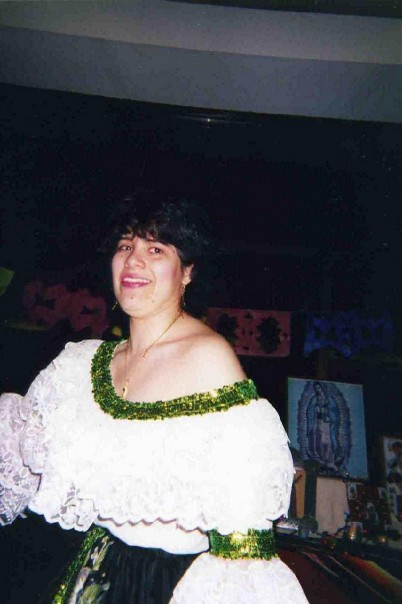
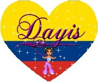

FAQs about the Sanjuanero

Here, you will find answers to frequently asked questions about the Sanjuanero. Do you have a question that you think we should add to the list? Please let us know by sending us a message, using the form at the bottom of this page, and we’ll be happy to add it. Thank you in advance for your interest and taking the time to do so!
Q: Are there places to go and take classes to learn the Sanjuanero here in the U.S?
A: Unfortunately, not at the moment, but that's not to say that it couldn't be a reality in the future! In the meantine, you are more than welcome to visit our
Learn the Sanjuanero page and our
home page to get started right now! We also encourage you to further explore the World Wide Web, as you will find more videos and further information. Furthermore, we invite you to take a trip to Colombia! Not only will you learn the dance from experts, but you’ll discover a beautiful country!
Q: Do colors matter for the clothing?
A: Not really, although the lady’s blouse is always white with the same colored trim that is on the skirt, although as stated on our home page, the skirt can come in many different colors. For the gentleman’s attire, it always consists of black pants, a white shirt, a red bandana, and a straw hat. The attire has always been the same when the dance is done in formal settings.
Q: What is the cost of the clothing?
A: About 600.000 Colombian pesos, which is approximately $200.00 U.S. dollars.
Q: Why is the Sanjuanero done barefoot?
A: The dance is done this way because it is one of many that has roots back in times of slavery, where the slaves would be out in the fields with shackles around their ankles, so they couldn't move very far and they had no shoes.
Q: Are there more variations of the Sanjuanero?
A: Each region of Colombia has its own cultural dance and they borrow some influence and a couple steps, but each dance is unique and stands alone.
Q: Is the dance only done by adults?
A: Absolutely not! In fact, just as there is an adult celebration, the little ones get their own as well, where they also get to compete in their own pageant and performing the dance well is also a requirement for them to have a chance at winning.
